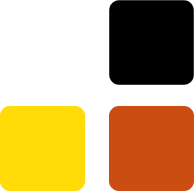

Landing page redesign
Last Minute Sotto Casa
Redesign di una landing page con focus su messaggio, gerarchia visiva e chiarezza della conversione.

Il lavoro.
La landing originale aveva un problema di immediatezza: il valore del servizio e l’azione principale non emergevano con abbastanza forza. Il lavoro si è concentrato su chiarezza, ritmo e lettura veloce.
Ho trattato la pagina come un percorso: prima il messaggio, poi il funzionamento, poi la fiducia e infine la call to action.

01 · analisi
Capire cosa non funzionava.
Ho individuato le criticità principali della landing: gerarchia poco incisiva, messaggio non abbastanza diretto e sezioni da riorganizzare.

02 · identità
Rendere il tono più riconoscibile.
La palette è stata pensata per rendere la comunicazione più accessibile e coerente, senza perdere immediatezza.

03 · leggibilità
Tipografia come gerarchia.
Ho lavorato sulla tipografia per rendere più chiara la scansione dei contenuti e guidare meglio lo sguardo dell’utente.
Risultato.
Il redesign rende la landing più semplice da attraversare: chi arriva sulla pagina capisce prima il servizio, il valore e il passo successivo.